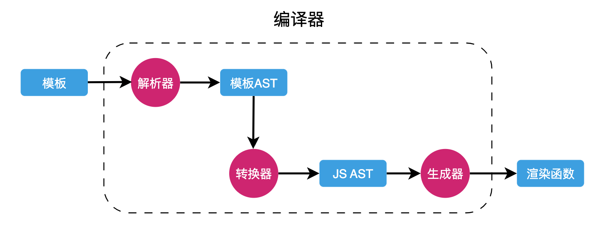
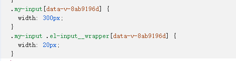
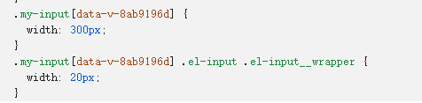
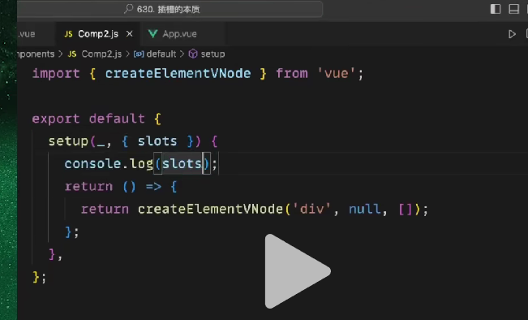

vue2 与 vue3 的对比
vue2 和 vue3 的区别
核心区别：
1.构造方式不同，vue2 是都挂载在构造函数上，vue3 都变成了普通函数导出(有利于 tree shaking)
2.数据响应式(Object.defineProperty 和 proxy)
3.增加了 hook 和 Composition Api,更加靠近函数式编程，使代码逻辑能复用
4.效率提升（节点）,diff 算法
5.源码组织方式变化：使用 TS 重写
其他区别：
1.vue3 可以有多个根组件
2.vue3 里面 v-if 的优先级高于 v-for
3.生命周期函数 beforeDestroy 改成了 beforeUnmount，使用 setup 代替了之前的 beforeCreate 和 created
4.vue2 中用 this 访问的 route,store,prop，在 vue3 中都使用了函数的形式
说一下 vue3.0 是如何变得更快的？
优化算法
- 静态提升：编译器找到静态节点，把他提升。因为一个节点如果是纯静态的话，没必要在渲染函数中去定义，因为渲染函数会反复运行，于是 vue3 会把静态节点放到渲染函数之外。
// vue2 的静态节点
render(){
createVNode("h1", null, "Hello World")
// ...
}
// vue3 的静态节点
const hoisted = createVNode("h1", null, "Hello World")
function render(){
// 直接使用 hoisted 即可
}
如果一个节点是动态，属性是静态的(class)，也可以将属性部分静态提升
- 预字符串化：当编译器遇到大量连续的静态内容，会直接将其编译为一个普通字符串节点
const _hoisted_2 = _createStaticVNode(
'<div class="logo"><h1>logo</h1></div><ul class="nav"><li><a href="">menu</a></li><li><a href="">menu</a></li><li><a href="">menu</a></li><li><a href="">menu</a></li><li><a href="">menu</a></li></ul>'
);
- 缓存事件处理函数：对事件处理函数进行缓存
// vue2
render(ctx){
return createVNode("button", {
onClick: function($event){
ctx.count++;
}
})
}
// vue3
render(ctx, _cache){
return createVNode("button", {
onClick: cache[0] || (cache[0] = ($event) => (ctx.count++))
})
}
- Block Tree：提升两棵树（新旧）的对比效率
vue3 的编译器能够标记每一节点是静态节点还是动态节点，这使得 vue3 在进行树的对比时候只会对比动态节点（静态节点永远不会改变）（vue3 更新是组件级别的，所以会从根节点开始进行动态节点对比）
- PatchFlag：vue3 对单个节点的对比只会去比较那些动态的节点。
体积变小
- 重写后的 Vue 支持了 tree-shaking，像 keep-alive、transition 甚至 v-for 等功能都可以按需引入。
- 优化了打包方法，使得打包后的 bundle 的体积也更小。
vue2 更新到 vue3 的方法
1.package.json 去掉 vue2.x 改为 vue3.x，然后安装@vue/compat
2.package.json 去掉 vue-template-compiler 改为@vue/compiler-sfc
3.在 webpack 或者 vue-cli 中打开兼容模式
module.exports = {
resolve: {
alias: {
vue: '@vue/compat'
}
},
module: {
rules: [
{
test: /\.vue$/,
loader: 'vue-loader',
options: {
compilerOptions: {
compatConfig: {
MODE: 2
}
}
}
}
]
}
}
4.修改入口的构造函数为导出函数
5.升级 vuex 和 router
6.就是语法层面，有些 vue.set(),生命周期钩子会改名
vue 概念题
谈一谈对 MVVM 的理解
MVVM 是 Model-View-ViewModel 的缩写。MVVM 是一种设计思想
- Model 层代表数据模型，可以在 Model 中定义数据修改和操作的业务逻辑
- View 代表 UI 组件，它负责将数据模型转化成 UI 展现出来
- ViewModel 是一个同步 View 和 Model 的对象
在 MVVM 架构下，View 和 Model 之间并没有直接的联系，而是通过 ViewModel 进行交互， Model 和 ViewModel 之间的交互是双向的， 因此 View 数据的变化会同步到 Model 中，而 Model 数据的变化也会立即反应到 View 上
对 ViewModel 通过双向数据绑定把 View 层和 Model 层连接了起来，而 View 和 Model 之间的同步工作完全是自动的，无需人为干涉，因此开发者只需关注业务逻辑，不需要手动操作 DOM，不需要关注数据状态的同步问题，复杂的数据状态维护完全由 MVVM 来统一管理
说一下 Vue 的优点，特点
- 数据响应式
只需要关注数据的变化，而不用关注页面的变化） 数据变化 -> 重新渲染
数据决定界面，解决了界面展示与数据展示不一致
虚拟 dom
单向数据流
谁的数据谁负责，其他人动不了
- 预编译
5.组件化开发
Vue 通过组件，把一个单页应用中的各种模块拆分到一个一个单独的组件（component）中，我们只要先在父级应用中写好各种组件标签（占坑），并且在组件标签中写好要传入组件的参数（就像给函数传入参数一样，这个参数叫做组件的属性），然后再分别写好各种组件的实现（填坑），然后整个应用就算做完了。
组件化开发的优点：提高开发效率、方便重复使用、简化调试步骤、提升整个项目的可维护性、便于协同开发。
讲讲虚拟 dom
是什么：
虚拟 dom 本质上就是一个普通的 JS 对象，用于描述视图的界面结构
vue 依靠虚拟 dom 树生成真实的 dom（他的优势在于修改时）
每个组件都有一个 render 函数，每个 render 函数都会返回一个虚拟 dom 树，这也就意味着每个组件都对应一棵虚拟 DOM 树
动机：
框架设计导致的，由于 vue 是数据驱动的，就是数据发生变化，界面要跟着变，vue 一个组件可能牵扯到 100 个 dom 元素，改动了某一个数据，vue 不知道去修改哪个 dom 元素(因为是以组件为单位),所以只能重新运行 render 函数重新渲染，由于每次都要重新渲染效率太低，于是出了虚拟 dom 这个折中办法，然后进行对比，把变的东西操作 dom；还有一个原因是虚拟 dom 不与上层使用绑定，使得 vue 也可以在小程序，移动端，桌面端去使用，因为虚拟 dom 只是一个 js 对象
svelte 没有虚拟 dom，但他的效率更高；svelte 在编译期间就能做到哪个数据对应那个真正 dom，所以他不需要虚拟 dom，所以他效率更高
js 的计算效率要比创建和销毁 dom 的效率高很多，由于真实 DOM 的创建、更新、插入等操作会带来大量的性能损耗，从而就会极大的降低渲染效率。所以 vue 增加了虚拟 dom，当页面结构发生变化的时候，先比较两棵树的虚拟 dom，利用 diff 算法去计算出要更新的节点，然后再更新必要的节点。这样方式的效果高。
使用 diff 计算出更新的节点（JS 层面）
更新必要的 DOM 节点（DOM 层面）
虚拟 dom 的好处：
1.最小量的去更新真实 dom
2.将页面抽象成为了对象，可移植，解耦页面，也为 keep-alive 保存页面提供了方式
虚拟 dom 多平台渲染的抽象能力(因为中间夹了一层，那么这层就是可移植的)
虚拟 dom 的属性：
key：标识节点唯一性
el：对应的实际元素
prop：属性信息(id,class,href);对于自定义组件，这里会包含传递给组件的所有 props（属性）值。
type：类型
children：子节点
component：子组件
讲讲模板编译（预编译）
vue 的源码中有一个 compile 模块，它主要负责将模板（本质是一个字符串）转换为 render 函数
模板编译器在对模板字符串进行编译的时候，是一点一点转换而来的，整个过程：

- 解析器：负责将模板字符串解析为对应的模板 AST
- 转换器：负责将模板 AST 转换为 JS AST
- 生成器：将 JS AST 生成最终的渲染函数（h 函数）
当中肯定会标记响应式的动态内容和静态属性（区分）
如果使用传统的引入方式，则编译时间发生在组件第一次加载时，这称之为运行时编译。
如果是在 vue-cli 或者 vite 的默认配置下，编译发生在打包时，这称之为模板预编译。
模板预编译(template)
当使用 DOM 内模板或 JavaScript 内的字符串模板时，模板会在运行时被编译为渲染函数。通常情况下这个过程已经足够快了，但对性能敏感的应用还是最好避免这种用法。
预编译模板最简单的方式就是使用单文件组件——相关的构建设置会自动把预编译处理好，所以构建好的代码已经包含了编译出来的渲染函数而不是原始的模板字符串。
如果你使用 webpack，并且喜欢分离 JavaScript 和模板文件，你可以使用 vue-template-loader，它也可以在构建过程中把模板文件转换成为 JavaScript 渲染函数。
简单来说，当 vue 进行打包时，会直接把组件中的模板转换为 render 函数，这叫做模板预编译
模板预编译只会发生在单文件组件(SFC)，并且把模板代码写在 template 里面的时候
export default {
//这样不会发生预编译
template() {},
};
在单文件组件(SFC)中，同时拥有 template 和 render 函数的时候，率先运行 template，而在普通方式引入的时候会率先读取 render 函数
这样做的好处在于：
运行时就不再需要编译模板了，提高了运行效率，打包结果中不再需要 vue 的编译代码，减少了打包体积
打包完成的时候，还没有运行的时候，模板已经变成了一个 render 函数，这样就省略了打包结果中还需要再进行编译模板的代码，减少打包体积（这一步是打包的时候做的）
编译是一个极其耗费性能的操作，预编译可以有效的提高运行时的性能，而且，由于运行的时候已不需要编译，vue-cli 在打包时会排除掉 vue 中的 compile 模块，以减少打包体积
模板的存在，仅仅是为了让开发人员更加方便的书写界面代码
vue 最终运行的时候，最终需要的是 render 函数，而不是模板，因此，模板中的各种语法，在虚拟 dom 中都是不存在的，它们都会变成虚拟 dom 的配置
vue 原理题
解释一下对 Vue 生命周期的理解
- 什么是 vue 生命周期
- vue 生命周期的作用是什么
- vue 生命周期有几个阶段
- 第一次页面加载会触发哪几个钩子
- DOM 渲染在哪个周期就已经完成
- 多组件（父子组件）中生命周期的调用顺序说一下
组件实例创建前：setup、beforeCreate
组件实例创建后：created
什么是 **vue** 生命周期
生命周期就是一个 vue 组件实例从创建到销毁的过程。
vue** 生命周期的作用是什么**
在生命周期的过程中会运行着一些叫做生命周期的函数，给予了开发者在不同的生命周期阶段添加业务代码的能力。
其实和回调是一个概念，当系统执行到某处时，检查是否有 hook(钩子)，有的话就会执行回调。
通俗的说，hook 就是在程序运行中，在某个特定的位置，框架的开发者设计好了一个钩子来告诉我们当前程序已经运行到特定的位置了，会触发一个回调函数，并提供给我们，让我们可以在生命周期的特定阶段进行相关业务代码的编写。
vue** 生命周期有几个阶段**
它可以总共分为 8 个阶段：创建前/后, 载入前/后,更新前/后,销毁前/销毁后。
- beforeCreate：是 new Vue( ) 之后触发的第一个钩子，在当前阶段 data、methods、computed 以及 watch 上的数据和方法都不能被访问。
- created：在实例创建完成后发生，当前阶段已经完成了数据观测，也就是可以使用数据，更改数据，在这里更改数据不会触发 updated 函数。可以做一些初始数据的获取，在当前阶段无法与 DOM 进行交互，如果非要想，可以通过 vm.$nextTick 来访问 DOM 。
- beforeMount：发生在挂载之前，在这之前 template 模板已导入渲染函数编译。而当前阶段虚拟 DOM 已经创建完成，即将开始渲染。在此时也可以对数据进行更改，不会触发 updated。
- mounted：在挂载完成后发生，在当前阶段，真实的 DOM 挂载完毕，数据完成双向绑定，可以访问到 DOM 节点，使用 refs 属性对 DOM 进行操作。
- beforeUpdate：发生在更新之前，也就是响应式数据发生更新，虚拟 DOM 重新渲染之前被触发，你可以在当前阶段进行更改数据，不会造成重渲染。
- updated：发生在更新完成之后，当前阶段组件 DOM 已完成更新。要注意的是避免在此期间更改数据，因为这可能会导致无限循环的更新。
- beforeDestroy（beforeUnmount）：发生在实例销毁之前，在当前阶段实例完全可以被使用，我们可以在这时进行善后收尾工作，比如清除计时器。
- destroyed（unmounted）：发生在实例销毁之后，这个时候只剩下了 DOM 空壳。组件已被拆解，数据绑定被卸除，监听被移出，子实例也统统被销毁。
第一次页面加载会触发哪几个钩子
会触发 4 个钩子，分别是：beforeCreate、created、beforeMount、mounted
DOM** 渲染在哪个周期就已经完成**
DOM 渲染是在 mounted 阶段完成，此阶段真实的 DOM 挂载完毕，数据完成双向绑定，可以访问到 DOM 节点。
多组件（父子组件）中生命周期的调用顺序说一下
组件的调用顺序都是先父后子，渲染完成的顺序是先子后父。组件的销毁操作是先父后子，销毁完成的顺序是先子后父。
- 加载渲染过程：父 beforeCreate->父 created->父 beforeMount->子 beforeCreate->子 created->子 beforeMount- >子 mounted->父 mounted
- 子组件更新过程：父 beforeUpdate->子 beforeUpdate->子 updated->父 updated
- 父组件更新过程：父 beforeUpdate -> 父 updated
- 销毁过程：父 beforeDestroy->子 beforeDestroy->子 destroyed->父 destroyed
Vue 实现双向数据绑定原理是什么？（Vue2）
采用数据劫持结合发布订阅模式（PubSub 模式）的方式，通过 Object.defineProperty 来劫持各个属性的 setter、getter，在数据变动时发布消息给订阅者，触发相应的监听回调。
当把一个普通 Javascript 对象传给 Vue 实例来作为它的 data 选项时，Vue 将遍历它的属性，用 Object.defineProperty 将它们转为 getter/setter。用户看不到 getter/setter，但是在内部它们让 Vue 追踪依赖，在属性被访问和修改时通知变化。
Vue 的数据双向绑定整合了 监听器 Observer，解析器 Compile 和订阅者 Watcher 三者
通过 Observer 来监听自己的 model 的数据变化
通过 Compile 来解析编译模板指令
最后利用 Watcher 搭起 Observer 和 Compile 之间的通信桥梁，达到数据变化->视图更新，视图交互变化（例如 input 操作）->数据 model 变更的双向绑定效果。

Vue3 响应式数据
响应式本质
是被监控的函数和函数中用到的响应式数据的关联
函数：被监控的函数
render
watchEffect
watch
computed 函数
effect(源码内部的底层实现)
注意:如果在函数的运行期间存在异步代码，那么异步的代码统统不看了（不产生关联）
函数中用到的响应式数据（一定要是获取对象的某个属性，并且这个对象是响应式的）
props
ref
reactive
computed 返回的数据
数据和函数关联起来以后，将来有一天数据发生变化，函数重新运行
函数在运行期间，出现了读取响应式数据被拦截的情况，我们就称之为两者之间产生了依赖，这个依赖（也就是一个对应关系）是会被收集的，方便响应式数据发生变化时重新执行对应的函数。
被监控的函数，在它的同步代码运行期间，读取或者操作被拦截的响应式数据会建立依赖关系（依赖收集）
建立了依赖关系之后，响应式数据发生变化，对应的函数才会重新执行（派发更新）。
所谓响应式，背后其实就是函数和数据的一组映射，当数据发生变化，会将该数据对应的所有函数全部执行一遍。当然这里的数据和函数都是有要求的。数据是响应式数据，函数是被监控的函数。
收集数据和函数的映射关系在 Vue 中被称之为依赖收集
数据变化通知映射的函数重新执行被称之为派发更新
依赖收集：所谓依赖收集，其实就是收集的一些函数。因为当数据发生变化的时候，需要重新执行这些函数，因此需要提前收集起来。
派发更新：所谓派发更新，就是通知被收集了的函数，现在数据已经更新了，你们需要重新执行一遍。
Vue3.x** 响应式数据原理是什么？**
在 Vue 2 中，响应式原理就是使用的 Object.defineProperty 来实现的。但是在 Vue 3.0 中采用了 Proxy，抛弃了 Object.defineProperty 方法。
究其原因，主要是以下几点：
- Object.defineProperty 无法监控到数组下标的变化，导致通过数组下标添加元素，不能实时响应
- Object.defineProperty 只能劫持对象的属性，从而需要对每个对象，每个属性进行遍历，如果，属性值是对象，还需要深度遍历。Proxy 可以劫持整个对象，并返回一个新的对象。
- Object.definedProperty 不支持数组(可以监听数组,不过数组方法无法监听自己重写)，更准确的说是不支持数组的各种 API(所以 Vue 重写了数组方法。
- Proxy 不仅可以代理对象，还可以代理数组。还可以代理动态增加的属性。
- Proxy 有多达 13 种拦截方法
- Proxy 是直接代理劫持整个对象。
Proxy** 只会代理对象的第一层，那么 **Vue3** 又是怎样处理这个问题的呢？**
判断当前 Reflect.get 的返回值是否为 Object，如果是则再通过 reactive 方法做代理， 这样就实现了深度观测。
监测数组的时候可能触发多次 **get/set**，那么如何防止触发多次呢？
我们可以判断 key 是否为当前被代理对象 target 自身属性，也可以判断旧值与新值是否相等，只有满足以上两个条件之一时，才有可能执行 trigger。
v-model 双向绑定的原理是什么？
v-model 本质就是传入一个属性和一个方法
- 一个名为
modelValue的 prop，本地 ref 的值与其同步； - 一个名为
update:modelValue的事件，当本地 ref 的值发生变更时触发。
v-model 依然保持单向数据流
v-model 本质就是 :value + input 方法的语法糖。可以通过 model 属性的 prop 和 event 属性来进行自定义。
原生的 v-model，会根据标签的不同生成不同的事件和属性。
- text 和 textarea 元素使用 value 属性和 input 事件
- checkbox 和 radio 使用 checked 属性和 change 事件
- select 字段将 value 作为 prop 并将 change 作为事件
以输入框为例，当用户在输入框输入内容时，会触发 input 事件，从而更新 value。而 value 的改变同样会更新视图，这就是 vue 中的双向绑定。
讲讲 vue 的 diff 算法
vue 一切的出发点，都是为了：
● 尽量啥也别做
● 不行的话，尽量仅改动元素属性
● 还不行的话，尽量移动元素，而不是删除和创建元素
● 还不行的话，删除和创建元素
在对比时，vue 采用深度优先、同层比较的方式进行比对。
正常 Diff 两个树的时间复杂度是 O(n^3)，但实际情况下我们很少会进行跨层级的移动 DOM，所以 Vue 将 Diff 进行了优化，从 O(n^3) -> O(n)，只有当新旧 children 都为多个子节点时才需要用核心的 Diff 算法进行同层级比较。
简单来说，diff 算法有以下过程
- 同级比较，再比较子节点
- 先判断一方有子节点一方没有子节点的情况(如果新的 children 没有子节点，将旧的子节点移除)
- 比较都有子节点的情况(核心 diff)
- 递归比较子节点
vue2 双端 diff：同时从新旧 children 的两端开始进行比较，借助 key 值找到可复用的节点
在判断两个节点是否相同时，vue 是通过虚拟节点的 key 和 tag 来进行判断的
具体步骤：
1.对根节点进行对比，如果相同则将旧节点关联的真实 dom 的引用挂到新节点上，根据需要更新属性到真实 dom
2 再对比其子节点数组；如果不相同，则按照新节点的信息递归创建所有真实 dom，同时挂到对应虚拟节点上，然后移除掉旧的 dom。
在对比其子节点数组时，vue 对每个子节点数组使用了两个指针，分别指向头尾，然后不断向中间靠拢来进行对比，这样做的目的是尽量复用真实 dom，尽量少的销毁和创建真实 dom。如果发现相同，则进入和根节点一样的对比流程，如果发现不同，则移动真实 dom 到合适的位置。（核心 diff）
这样一直递归的遍历下去，直到整棵树完成对比。
vue2 diff 双端对比
1.比较头指针是否相同
2.比较尾部指针是否相同
3.用旧节点头指针去比较新节点尾指针
4.用新节点尾指针去看在旧的树中存在不存在
vue3 快速 diff：包括了双端 diff 和最长递增子序列算法
vue3 还在单节点的比较上有较大提升，动态有标识，事件有缓存，block tree
预处理阶段：处理首尾节点，找出新旧两种子节点中首尾可复用的节点并更新。
处理理想情况下新增和删除节点：若通过预处理有一组节点已经更新完毕，证明新的一组子节点只需新增或删除部分节点即可完成更新。
构造 source 数组：通过遍历新旧两组子节点，构造一个 source 数组,去存储新的子节点对应的旧子节点的位置索引，并在此过程中判断是否需要使用 diff 算法处理移动。
节点位置移动：根据最长递增子序列判断具体的某个节点是否需要新增或者移动，在需要时移动节点以匹配新的子节点顺序。
最长递增子序列：找到两个最长的一样的序列，保持他们的不动，这样就可以最小量的修改 dom
最长递增子序列好在哪里？
用了这个方式不会降低是不会降低 diff 的时间复杂度的与空间复杂度
用这个方式是为了尽量的保证两棵树的稳定，降低修改真正 dom 的量
讲讲 vue 中的 key
key 的作用主要是为了高效的更新虚拟 DOM
key 属性的目的是为了让 vue 可以区分它们，相当于是一个唯一 id
在 diff 算法和使用相同标签名元素的过渡切换时，会使用到 key 属性
1.高效的更新： key 帮助 Vue 识别哪些元素是变化的、哪些是新的、哪些是需要被移除的。
在没有 key 的情况下，Vue 会尽量复用已有元素，而不管它们的实际内容是否发生了变化，这可能导致不必要的更新或者错误的更新。
通过使用 key，Vue 可以准确地知道哪些元素发生了变化，从而高效地更新 DOM。
2.确保元素的唯一性： key 属性需要是唯一的，这样每个元素在列表中都可以被唯一标识。这避免了在元素移动、插入或删除时出现混淆，确保 Vue 可以正确地追踪每个元素。
3.提升渲染性能： 使用 key 可以显著提升列表渲染的性能。因为 Vue 能通过 key 快速定位到需要更新的元素，而不是重新渲染整个列表。尤其在处理大型列表时，使用 key 可以避免大量不必要的 DOM 操作，提升应用的响应速度。
同名元素过渡切换
<transition name="fade-transition">
<img v-for="(image, index) in images" :key="image.id" :src="image.src" alt="Slide">
</transition>
.fade - transition - enter - from,
.fade - transition - leave - to {
opacity: 0;
}
.fade - transition - enter - to,
.fade - transition - leave - from {
opacity: 1;
}
.fade - transition - enter - active,
.fade - transition - leave - active {
transition: opacity 0.5s;
}
由于key的存在，Vue 能够正确地识别哪些图片元素是新的，哪些是旧的，从而在新旧图片之间应用淡入淡出的过渡效果。如果没有key或者key不唯一，可能会出现图片闪烁或者过渡效果混乱的情况。
讲讲 keep-alive
- keep-alive 的常用属性有哪些
- keep-alive 相关的生命周期函数是什么，什么场景下会进行使用
- keep-alive 的实现原理是什么
介绍
keep-alive 组件是 vue 的内置组件，用于缓存内部组件实例。这样做的目的在于，keep-alive 内部的组件切回时，不用重新创建组件实例，而直接使用缓存中的实例，一方面能够避免创建组件带来的开销，另一方面可以保留组件的状态。
keep-alive 核心原理就是将切换走的页面的虚拟 dom 保存在内存中，下次回来的时候还是继续使用保存在内存中的数据
常用属性与生命周期
include 和 exclude 属性：通过它们可以控制哪些组件进入缓存。
max 属性：通过它可以设置最大缓存数，当缓存的实例超过该数时，vue 会移除最久没有使用的组件缓存。
两个生命周期钩子函数：分别是 activated 和 deactivated，它们分别在组件激活和失活时触发。第一次 activated 触发是在 mounted 之后
实现原理
keep-alive 在内部维护了一个 key 数组和一个缓存对象
// keep-alive 内部的声明周期函数
created () {
this.cache = {
key(缓存组件id)：组件的虚拟DOM
}
}
key 数组记录目前缓存的组件 key 值，如果组件没有指定 key 值，则会为其自动生成一个唯一的 key 值
cache 对象以 key 值为键，vnode 为值，用于缓存组件对应的虚拟 DOM
在 keep-alive 的渲染函数中，其基本逻辑是判断当前渲染的 vnode 是否有对应的缓存，如果有，从缓存中读取到对应的组件实例；如果没有则将其缓存。
他会把虚拟 dom 缓存在内存，当切换过来的时候就直接渲染
当缓存数量超过 max 数值时，keep-alive 会移除掉 key 数组的第一个元素。
讲讲 computed
是什么
computed 是一种计算属性，来描述依赖响应式状态的复杂逻辑，并且具有缓存机制。
为计算属性创建的函数不会立即执行，如果没有使用，就不会得到执行
计算属性的 setter，则极其简单，当设置计算属性时，直接运行 setter 即可。
原理
在内部 effect 源码中会使用两个关键属性来实现缓存，一个是 value，一个是 dirty
value 属性用于保存 Watcher 运行的结果，受 lazy 的影响，该值在最开始是 undefined
dirty 属性用于指示当前的 value 是否已经过时了，即是否为脏值，受 lazy 的影响，该值在最开始是 true
应用
对 prop 传入数据的两次计算
计算商品总价
数据格式化或者映射
副作用操作：
调用系统 I/O 的 API
发送网络请求
在函数体内修改外部变量的值
使用 console.log 等方法进行输出
调用存在副作用的函数
watch 与 computed 的区别是什么？以及他们的使用场景分别是什么？
相同点：
- 都是观察数据变化的
区别点：
- watch 没有缓存；computed 有缓存，它依赖的值变了才会重新计算
- watch 是一对多（监听某一个值变化，执行对应操作）；computed 是多对一（监听属性依赖于其他属性）
- watch 监听函数接收两个参数，第一个是最新值，第二个是输入之前的值；
- 计算属性是在依赖的数据发生变化的时候，重新做二次计算，不会涉及到副作用的操作(无副作用)；侦听器在依赖的数据发生变化的时候，允许做一些副作用的操作，例如更改 DOM、发送异步请求（有副作用）
watch 的参数：
- deep：深度监听
- immediate ：组件加载立即触发回调函数执行
这两个东西一个是用于计算的，一个是用于监听响应式的值
关于 computed 中书写异步代码的问题：
其实无论是 watch,computed 还是 watchEffect 在 vue 内部都是使用一个 effect 函数，他里面创建数据和函数的关联是同步的，所以他根本无法读取到响应式数据。所以不能使用，如果一定要使用，可以在异步代码之前先使用一下响应式数据，让 effect 函数获取到。
应用：
watch:打开详情页切换 id 发送网络请求。
computed:二次计算
computed 和 methods 的区别是什么？
- computed 当做属性使用，而 methods 则当做方法调用
- computed 可以具有 getter 和 setter，因此可以赋值，而 methods 不行
- computed 具有缓存，而 methods 没有
watch 与 watchEffect 的区别
watchEffect 的回调函数一开始就执行，watch 的回调函数不会执行（除非配置 immediate: true）
watchEffect 数据改变，没有旧值参考，watch 有旧值与新值
watchEffect 监控的都是一些回调函数中用到的数据，watch 可以在回调执行与响应式无关的代码
讲讲 scoped
在 vue 文件中的 style 标签上，有一个特殊的属性：scoped。当一个 style 标签拥有 scoped 属性时，它的 CSS 样式就只能作用于当前的组件，也就是说，该样式只能适用于当前组件元素。通过该属性，可以使得组件之间的样式不互相污染。如果一个项目中的所有 style 标签全部加上了 scoped，相当于实现了样式的模块化。
scoped** 的实现原理**
vue 中的 scoped 属性的效果主要通过 PostCSS 转译实现的。PostCSS 给一个组件中的所有 DOM 添加了一个独一无二的动态属性，然后，给 CSS 选择器额外添加一个对应的属性选择器来选择该组件中 DOM，这种做法使得样式只作用于含有该属性的 DOM，即组件内部 DOM。
例如：
转译前
<template>
<div class="example">hi</div>
</template>
<style scoped>
.example {
color: red;
}
</style>
转译后：
<template>
<div class="example" data-v-5558831a>hi</div>
</template>
<style>
.example[data-v-5558831a] {
color: red;
}
</style>
scoped 样式穿透
首先说一下什么场景下需要 scoped 样式穿透。
在很多项目中，会出现这么一种情况，即：引用了第三方组件，需要在组件中局部修改第三方组件的样式，而又不想去除 scoped 属性造成组件之间的样式污染。此时只能通过特殊的方式，穿透 scoped。
使用:deep()可以穿透的原理是在内部会创建全局 CSS 规则，但这个全局 css 规则只会在.common-image 之内生效。
未使用:deep
.my-input{
width: 300px;
.el-input__wrapper{
width: 20px;
}
}

使用 deep
.my-input{
width: 300px;
:deep(.el-input){
.el-input__wrapper{
width: 20px;
}
}
}

讲讲插槽
插槽的使用
子组件：通过 slot 来设置插槽
父组件：使用子组件时可以使用<template #xxx>语法去编写内容
插槽种类：
默认插槽：拥有默认的一些内容
具名插槽：给你的插槽取一个名字
作用域插槽：数据来自于子组件，通过插槽的形式传递给父组件使用
插槽本质：父组件向子组件传递模板内容
父组件向子组件传递过去的东西本质上是函数，通过调用这些函数，能够得到对应结构的虚拟 DOM.
子组件设置插槽的本质
其实就是对父组件传递过来的函数进行调用，得到对应的虚拟 DOM.
当父组件向子组件去传递插槽的时候，实际上传递的是一个对象；每传一个插槽，就相等于是传了一个 key/value(key 是插槽名，value 是一个 render 函数)，调用可以得到虚拟 dom
{
default: function(){ 虚拟dom },
xxx: function(){ 虚拟dom },
xxx: function(){ 虚拟dom },
}

作用域插槽
在某些场景下插槽的内容可能想要同时使用父组件域内和子组件域内的数据。要做到这一点，我们需要一种方法来让子组件在渲染时将一部分数据提供给插槽。
<!-- <MyComponent> 的模板 -->
<div>
<slot :text="greetingMessage" :count="1"></slot>
</div>
当需要接收插槽 props 时，默认插槽和具名插槽的使用方式有一些小区别。下面我们将先展示默认插槽如何接受 props，通过子组件标签上的 v-slot 指令，直接接收到了一个插槽 props 对象：
<MyComponent v-slot="slotProps">
{{ slotProps.text }} {{ slotProps.count }}
</MyComponent>

插槽与作用域插槽
插槽的作用是子组件提供了可替换模板，父组件可以更换模板的内容。
作用域插槽给了子组件将数据返给父组件的能力，子组件一样可以复用，同时父组件也可以重新组织内容和样式。
讲讲 nextTick
vue 是采用异步渲染的
因为如果不采用异步更新，那么每次更新数据都会对当前组件进行重新渲染，非常影响性能；所以为了性能考虑，Vue 会在本轮数据更新后，再去异步更新视图。
同步代码执行完后，nextTick（flushSchedulerQueue）进行批量更新操作
作用：vue 更新 DOM 是异步更新的，数据变化，DOM 的更新不会马上完成；所以 nextTick 提供了回调，在这个函数中，可以拿到视图更新过后的数据
实现原理
nextTick 主要使用了宏任务和微任务。根据执行环境分别尝试采用
- Promise：可以将函数延迟到当前函数调用栈最末端
- MutationObserver ：是 H5 新加的一个功能，其功能是监听 DOM 节点的变动，在所有 DOM 变动完成后，执行回调函数
- setImmediate：用于中断长时间运行的操作，并在浏览器完成其他操作（如事件和显示更新）后立即运行回调函数
- 如果以上都不行则采用 setTimeout 把函数延迟到 DOM 更新之后再使用
Vue 的路由实现
解释 **hash** 模式和 **history** 模式的实现原理
hash 模式的实现：hash 值的变化，不会导致浏览器向服务器发出请求，浏览器不发出请求，就不会刷新页面；通过监听 hashchange 事件可以知道 hash 发生了哪些变化，然后根据 hash 变化来实现更新页面部分内容的操作。
history 模式的实现：主要是 HTML5 标准发布的两个 API，pushState 和 replaceState，这两个 API 可以在改变 URL，但是不会发送请求。这样就可以监听 url 变化来实现更新页面部分内容的操作。
两种模式的区别：
- 首先是在 URL 的展示上，hash 模式有“#”，history 模式没有
- 刷新页面时，hash 模式可以正常加载到 hash 值对应的页面，而 history 没有处理的话，会返回 404，一般需要后端将所有页面都配置重定向到首页路由
- 在兼容性上，hash 可以支持低版本浏览器和 IE
说一下 router （useRouter）与 route （useRoute）的区别
router 对象是全局路由的实例
router 对象常用的方法有：
- push：向 history 栈添加一个新的记录
- go：页面路由跳转前进或者后退
- replace：替换当前的页面，不会向 history 栈添加一个新的记录
- beforeEach ：组件路由守卫
route 对象表示当前的路由信息，包含了当前 URL 解析得到的信息。
route.path：字符串，对应当前路由的路径，总是解析为绝对路径，如 “/foo/bar”。
route.params： 一个 key/value 对象，包含了 动态片段 和 全匹配片段，如果没有路由参数，就是一个空对象。
route.query：一个 key/value 对象，表示 URL 查询参数。例如对于路径 /foo?user=1，则有 route.query.user == 1，如果没有查询参数，则是个空对象。
route.hash：当前路由的 hash 值 (不带 #) ，如果没有 hash 值，则为空字符串。
route.fullPath：完成解析后的 URL，包含查询参数和 hash 的完整路径。
route.matched：数组，包含当前匹配的路径中所包含的所有片段所对应的配置参数对象。
route.name：当前路径名字
route.meta：路由元信息
vueRouter 有哪几种导航守卫？
- 全局前置/钩子：beforeEach、beforeResolve、afterEach
- 路由独享的守卫：beforeEnter（自定义在路由上）
- 组件内的守卫：beforeRouteEnter、beforeRouteUpdate（路由参数发生变化时）、beforeRouteLeave
to:跳转路由后的信息
from:从哪里来的信息
next:调用 next()方法可跳转路由
解释一下 **vueRouter** 的完整的导航解析流程是什么
一次完整的导航解析流程如下：
- 导航被触发。
- 在失活的组件里调用离开守卫。（beforeRouteLeave）
- 调用全局的 beforeEach 守卫。
- 在路由配置里调用 beforeEnter。
- 在被激活的组件里调用 beforeRouteEnter。
- 调用全局的 beforeResolve 守卫。
- 导航被确认。
- 调用全局的 afterEach 钩子。
- 触发 DOM 更新。
- 用创建好的实例调用 beforeRouteEnter 守卫中传给 next 的回调函数。
beforeResolve守卫是一种全局路由守卫。它在beforeRouteEnter（组件内进入守卫）之后、afterEach（全局后置守卫）之前被触发
原理源码：
1.根据用户的设置监听 hash 或者是 pushState（replaceState）
2.要根据完整的路由对象中去找到当前路由选中的组件
3.要提供一些守卫函数（beforeEach）（本质是注册一些钩子函数），路由对象的修改方法
4.要设计
讲讲 pinia 与直接使用 reactive 的区别
Pinia 是经过了完善的测试的，会给你带来很多附加的价值，例如：
开发工具支持（调试工具）
插件机制
而且相比一个单纯的响应式数据，Pinia 语义上面也会更好一些：
一个单独抽出来的 reactive 对象，从语义上来讲可能是任何东西
一个 Pinia 对象，从语义上来讲就是全局共享数据的仓库
这样其实也能一定程度的降低开发者的心智负担，提高代码的可读性。
讲讲动态组件
<component :is="component" :option="option" :paths="currentPaths"</component>
component是一个组件对象，可以到达修改这个值而改变页面组件的显示
讲讲异步组件
懒加载就是异步组件的方式
import { defineAsyncComponent } from 'vue'
// 之后就可以像使用普通组件一样，使用 AsyncCom 这个异步组件
const AsyncCom = defineAsyncComponent(()=>{
// 这是一个工厂函数，该工厂函数一般返回一个 Promise
return new Promise((resolve, reject)=>{
resolve(/* 获取到的组件 */)
})
})
<template>
<div id="app">
<button @click="loadComponent('Home')">访问主页</button>
<button @click="loadComponent('About')">访问关于</button>
<component :is="currentComponent" v-if="currentComponent"></component>
</div>
</template>
<script setup>
import { shallowRef, defineAsyncComponent } from 'vue'
// import Home from './components/Home.vue'
// import About from './components/About.vue'
const currentComponent = shallowRef(null)
/**
*
* @param name 组件名
*/
const loadComponent = (name) => {
currentComponent.value = defineAsyncComponent(() => import(`./components/${name}.vue`))
}
</script>
配置项
const AsyncComp = defineAsyncComponent({
// 加载函数
loader: () => import("./Foo.vue"),
// 加载异步组件时使用的组件
// 如果提供了一个加载组件，它将在内部组件加载时先行显示。
loadingComponent: LoadingComponent,
// 展示加载组件前的延迟时间，默认为200ms
// 在网络状况较好时，加载完成得很快，加载组件和最终组件之间的替换太快可能产生闪烁，反而影响用户感受。
// 通过延迟来解决闪烁问题
delay: 200,
// 加载失败后展示的组件
// 如果提供了一个报错组件，则它会在加载器函数返回的 Promise 抛错时被渲染。
errorComponent: ErrorComponent,
// 你还可以指定一个超时时间，在请求耗时超过指定时间时也会渲染报错组件。
// 默认值是：Infinity
timeout: 3000,
});
讲讲 setup
1.简化书写：在传统的 setup 函数中，我们需要返回一个对象，其中包含需要在模板中使用的变量和方法。在